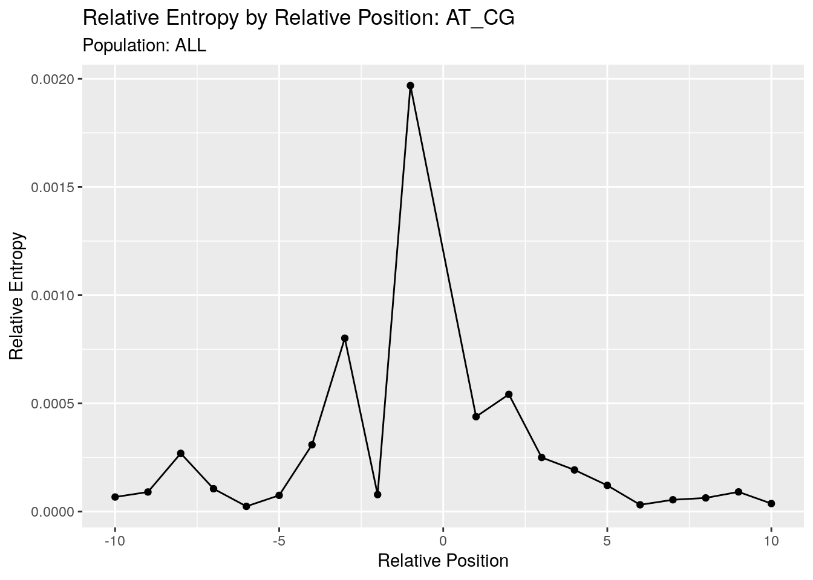
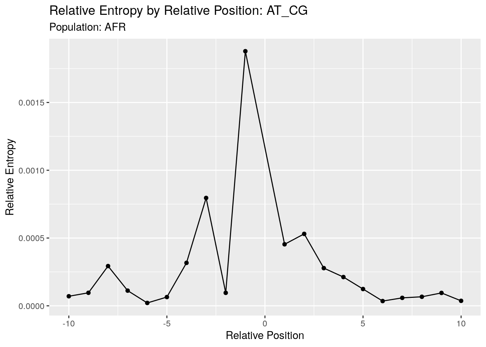

1000G_single_postion_comp
Andy Beck
2021-11-01
Last updated: 2021-12-15
Checks: 5 2
Knit directory: LSCI/
This reproducible R Markdown analysis was created with workflowr (version 1.6.2). The Checks tab describes the reproducibility checks that were applied when the results were created. The Past versions tab lists the development history.
Great! Since the R Markdown file has been committed to the Git repository, you know the exact version of the code that produced these results.
Great job! The global environment was empty. Objects defined in the global environment can affect the analysis in your R Markdown file in unknown ways. For reproduciblity it’s best to always run the code in an empty environment.
The command set.seed(20211101) was run prior to running the code in the R Markdown file. Setting a seed ensures that any results that rely on randomness, e.g. subsampling or permutations, are reproducible.
Great job! Recording the operating system, R version, and package versions is critical for reproducibility.
- at_cg_pop_plot
- at_gc_pop_plot
- at_ta_pop_plot
- cpg_gc_at_pop_plot
- cpg_gc_cg_pop_plot
- cpg_gc_ta_pop_plot
- gc_at_pop_plot
- gc_cg_pop_plot
- gc_ta_pop_plot
- load_2pop
- plot_2pop
To ensure reproducibility of the results, delete the cache directory 1000G_single_postion_comp_cache and re-run the analysis. To have workflowr automatically delete the cache directory prior to building the file, set delete_cache = TRUE when running wflow_build() or wflow_publish().
Using absolute paths to the files within your workflowr project makes it difficult for you and others to run your code on a different machine. Change the absolute path(s) below to the suggested relative path(s) to make your code more reproducible.
| absolute | relative |
|---|---|
| /net/snowwhite/home/beckandy/research/documentation/LSCI/output/tikz/single_pos/AFR_EUR_AT_CG.tex | output/tikz/single_pos/AFR_EUR_AT_CG.tex |
| /net/snowwhite/home/beckandy/research/documentation/LSCI/output/tikz/single_pos/ | output/tikz/single_pos |
Great! You are using Git for version control. Tracking code development and connecting the code version to the results is critical for reproducibility.
The results in this page were generated with repository version 548c943. See the Past versions tab to see a history of the changes made to the R Markdown and HTML files.
Note that you need to be careful to ensure that all relevant files for the analysis have been committed to Git prior to generating the results (you can use wflow_publish or wflow_git_commit). workflowr only checks the R Markdown file, but you know if there are other scripts or data files that it depends on. Below is the status of the Git repository when the results were generated:
Ignored files:
Ignored: .Rhistory
Ignored: .Rproj.user/
Ignored: analysis/1000G_single_postion_comp_cache/
Ignored: analysis/disqus.html
Untracked files:
Untracked: 1000G_single_position_ALL-tikzDictionary
Untracked: BRIDGES_single_position-tikzDictionary
Untracked: BRIDGES_summary_stats-tikzDictionary
Untracked: output/tikz/
Unstaged changes:
Modified: analysis/BRIDGES_summary_stats.Rmd
Modified: code/single_pos_functions.R
Note that any generated files, e.g. HTML, png, CSS, etc., are not included in this status report because it is ok for generated content to have uncommitted changes.
These are the previous versions of the repository in which changes were made to the R Markdown (analysis/1000G_single_postion_comp.Rmd) and HTML (docs/1000G_single_postion_comp.html) files. If you’ve configured a remote Git repository (see ?wflow_git_remote), click on the hyperlinks in the table below to view the files as they were in that past version.
| File | Version | Author | Date | Message |
|---|---|---|---|---|
| Rmd | 548c943 | Andy Beck | 2021-12-15 | wflow_publish("analysis//1000G_single_postion_comp.Rmd") |
| html | ebe7aed | Andy Beck | 2021-11-10 | Build site. |
| Rmd | fb5c8e4 | Andy Beck | 2021-11-10 | add BRIDGES comparison |
| html | 96d087d | Andy Beck | 2021-11-10 | Build site. |
| Rmd | 752a421 | Andy Beck | 2021-11-10 | Add chisq to comp |
| html | 896eb47 | Andy Beck | 2021-11-09 | Build site. |
| Rmd | 0950949 | Andy Beck | 2021-11-09 | wflow_publish(c("analysis/1000G_single_postion_comp.Rmd", "analysis/outline.Rmd")) |
| html | a878a58 | Andy Beck | 2021-11-09 | Build site. |
| Rmd | 53c69c2 | Andy Beck | 2021-11-09 | Add some comparison analysis |
| html | bcee610 | Andy Beck | 2021-11-09 | update site to include disqus |
| html | ef92407 | Andy Beck | 2021-11-02 | Build site. |
| Rmd | 6842cad | Andy Beck | 2021-11-01 | flesh out some pages |
| html | 6842cad | Andy Beck | 2021-11-01 | flesh out some pages |
1000G Single Position Models - Population Comparisons
Introduction
In another document, we evaluated the single position models using singletons aggregated across all five of the 1000 Genomes super-populations. A natural question we can ask is if there is any heterogeneity across the populations. To address this, we perform our analyses again with the singletons, but this time we analyze each super-population separately. Having done this, we assess consistency of the results by checking the correlations of not only the position-level results, but also the contribution to each statistic from the nucleotides at the flanking position under consideration.
Simple Correlation Analysis
AT_CG
ALL

| Version | Author | Date |
|---|---|---|
| a878a58 | Andy Beck | 2021-11-09 |
As a reminder, here we plot the single position statistics for the A(T)>C(G) sub-type using singletons aggregated across all 5 super-populations.
AFR

| Version | Author | Date |
|---|---|---|
| a878a58 | Andy Beck | 2021-11-09 |
When we look at the AFR super-population, our results across all the positions looks strikingly similar to what we saw above in the ALL analysis. This might be driven by AFR contributing a larger fraction of the singletons than the other 4 super-populations, so let us now take a look at those.
SAS
| Version | Author | Date |
|---|---|---|
| a878a58 | Andy Beck | 2021-11-09 |
Across all five super-populations we see the same pattern as we look across positions, suggesting that the results are consistent across the five super-populations. The only difference we really see is a shift in the magnitude of the statistic, which is likely driven by differences in the number of singletons across the super-populations.
To quantify our observation that the statistics are consistent across super-populations, let’s look at the pairwise correlations of statistics across positions for each pair of super-populations:
Correlation method: 'pearson'
Missing treated using: 'pairwise.complete.obs'| term | chi_sq_ct.AFR | chi_sq_ct.AMR | chi_sq_ct.EAS | chi_sq_ct.EUR | chi_sq_ct.SAS |
|---|---|---|---|---|---|
| chi_sq_ct.AFR | 1.00 | .99 | 1.00 | 1.00 | |
| chi_sq_ct.AMR | 1.00 | 1.00 | 1.00 | 1.00 | |
| chi_sq_ct.EAS | .99 | 1.00 | .99 | 1.00 | |
| chi_sq_ct.EUR | 1.00 | 1.00 | .99 | 1.00 | |
| chi_sq_ct.SAS | 1.00 | 1.00 | 1.00 | 1.00 |
We see here that the statistics at each position are highly correlated across the super-populations. We can also ask if the “residuals” (contribution of each nucleotide to each position’s statistic) is also correlated:
Correlation method: 'pearson'
Missing treated using: 'pairwise.complete.obs'and it appears that they are for this sub-type. Let’s now take a look at the other sub-types
AT_GC
Position-level
| term | chi_sq_ct.AFR | chi_sq_ct.AMR | chi_sq_ct.EAS | chi_sq_ct.EUR | chi_sq_ct.SAS |
|---|---|---|---|---|---|
| chi_sq_ct.AFR | 1.00 | 1.00 | 1.00 | 1.00 | |
| chi_sq_ct.AMR | 1.00 | 1.00 | 1.00 | 1.00 | |
| chi_sq_ct.EAS | 1.00 | 1.00 | 1.00 | 1.00 | |
| chi_sq_ct.EUR | 1.00 | 1.00 | 1.00 | 1.00 | |
| chi_sq_ct.SAS | 1.00 | 1.00 | 1.00 | 1.00 |
Nucleotide-level
| term | chi_sq_ct.AFR | chi_sq_ct.AMR | chi_sq_ct.EAS | chi_sq_ct.EUR | chi_sq_ct.SAS |
|---|---|---|---|---|---|
| chi_sq_ct.AFR | 1.00 | 1.00 | 1.00 | 1.00 | |
| chi_sq_ct.AMR | 1.00 | 1.00 | 1.00 | 1.00 | |
| chi_sq_ct.EAS | 1.00 | 1.00 | 1.00 | 1.00 | |
| chi_sq_ct.EUR | 1.00 | 1.00 | 1.00 | 1.00 | |
| chi_sq_ct.SAS | 1.00 | 1.00 | 1.00 | 1.00 |
AT_TA
Position-level
| term | chi_sq_ct.AFR | chi_sq_ct.AMR | chi_sq_ct.EAS | chi_sq_ct.EUR | chi_sq_ct.SAS |
|---|---|---|---|---|---|
| chi_sq_ct.AFR | 1.00 | 1.00 | 1.00 | 1.00 | |
| chi_sq_ct.AMR | 1.00 | 1.00 | 1.00 | 1.00 | |
| chi_sq_ct.EAS | 1.00 | 1.00 | 1.00 | 1.00 | |
| chi_sq_ct.EUR | 1.00 | 1.00 | 1.00 | 1.00 | |
| chi_sq_ct.SAS | 1.00 | 1.00 | 1.00 | 1.00 |
Nucleotide-level
| term | chi_sq_ct.AFR | chi_sq_ct.AMR | chi_sq_ct.EAS | chi_sq_ct.EUR | chi_sq_ct.SAS |
|---|---|---|---|---|---|
| chi_sq_ct.AFR | 1.00 | 1.00 | 1.00 | 1.00 | |
| chi_sq_ct.AMR | 1.00 | 1.00 | 1.00 | 1.00 | |
| chi_sq_ct.EAS | 1.00 | 1.00 | 1.00 | 1.00 | |
| chi_sq_ct.EUR | 1.00 | 1.00 | 1.00 | 1.00 | |
| chi_sq_ct.SAS | 1.00 | 1.00 | 1.00 | 1.00 |
GC_AT
Position-level
| term | chi_sq_ct.AFR | chi_sq_ct.AMR | chi_sq_ct.EAS | chi_sq_ct.EUR | chi_sq_ct.SAS |
|---|---|---|---|---|---|
| chi_sq_ct.AFR | .99 | .99 | .99 | .99 | |
| chi_sq_ct.AMR | .99 | 1.00 | 1.00 | 1.00 | |
| chi_sq_ct.EAS | .99 | 1.00 | 1.00 | 1.00 | |
| chi_sq_ct.EUR | .99 | 1.00 | 1.00 | 1.00 | |
| chi_sq_ct.SAS | .99 | 1.00 | 1.00 | 1.00 |
Nucleotide-level
| term | chi_sq_ct.AFR | chi_sq_ct.AMR | chi_sq_ct.EAS | chi_sq_ct.EUR | chi_sq_ct.SAS |
|---|---|---|---|---|---|
| chi_sq_ct.AFR | .99 | .99 | .98 | .97 | |
| chi_sq_ct.AMR | .99 | .99 | .99 | .99 | |
| chi_sq_ct.EAS | .99 | .99 | .98 | .97 | |
| chi_sq_ct.EUR | .98 | .99 | .98 | 1.00 | |
| chi_sq_ct.SAS | .97 | .99 | .97 | 1.00 |
cpg_GC_AT
Position-level
| term | chi_sq_ct.AFR | chi_sq_ct.AMR | chi_sq_ct.EAS | chi_sq_ct.EUR | chi_sq_ct.SAS |
|---|---|---|---|---|---|
| chi_sq_ct.AFR | 1.00 | 1.00 | 1.00 | 1.00 | |
| chi_sq_ct.AMR | 1.00 | 1.00 | 1.00 | 1.00 | |
| chi_sq_ct.EAS | 1.00 | 1.00 | 1.00 | 1.00 | |
| chi_sq_ct.EUR | 1.00 | 1.00 | 1.00 | 1.00 | |
| chi_sq_ct.SAS | 1.00 | 1.00 | 1.00 | 1.00 |
Nucleotide-level
| term | chi_sq_ct.AFR | chi_sq_ct.AMR | chi_sq_ct.EAS | chi_sq_ct.EUR | chi_sq_ct.SAS |
|---|---|---|---|---|---|
| chi_sq_ct.AFR | 1.00 | 1.00 | 1.00 | 1.00 | |
| chi_sq_ct.AMR | 1.00 | 1.00 | 1.00 | 1.00 | |
| chi_sq_ct.EAS | 1.00 | 1.00 | 1.00 | 1.00 | |
| chi_sq_ct.EUR | 1.00 | 1.00 | 1.00 | 1.00 | |
| chi_sq_ct.SAS | 1.00 | 1.00 | 1.00 | 1.00 |
GC_CG
Position-level
| term | chi_sq_ct.AFR | chi_sq_ct.AMR | chi_sq_ct.EAS | chi_sq_ct.EUR | chi_sq_ct.SAS |
|---|---|---|---|---|---|
| chi_sq_ct.AFR | 1.00 | .99 | .99 | 1.00 | |
| chi_sq_ct.AMR | 1.00 | 1.00 | 1.00 | 1.00 | |
| chi_sq_ct.EAS | .99 | 1.00 | 1.00 | 1.00 | |
| chi_sq_ct.EUR | .99 | 1.00 | 1.00 | 1.00 | |
| chi_sq_ct.SAS | 1.00 | 1.00 | 1.00 | 1.00 |
Nucleotide-level
| term | chi_sq_ct.AFR | chi_sq_ct.AMR | chi_sq_ct.EAS | chi_sq_ct.EUR | chi_sq_ct.SAS |
|---|---|---|---|---|---|
| chi_sq_ct.AFR | .99 | .99 | .99 | .99 | |
| chi_sq_ct.AMR | .99 | 1.00 | 1.00 | 1.00 | |
| chi_sq_ct.EAS | .99 | 1.00 | 1.00 | 1.00 | |
| chi_sq_ct.EUR | .99 | 1.00 | 1.00 | 1.00 | |
| chi_sq_ct.SAS | .99 | 1.00 | 1.00 | 1.00 |
cpg_GC_CG
Position-level
| term | chi_sq_ct.AFR | chi_sq_ct.AMR | chi_sq_ct.EAS | chi_sq_ct.EUR | chi_sq_ct.SAS |
|---|---|---|---|---|---|
| chi_sq_ct.AFR | 1.00 | .99 | .99 | .99 | |
| chi_sq_ct.AMR | 1.00 | .99 | 1.00 | 1.00 | |
| chi_sq_ct.EAS | .99 | .99 | 1.00 | 1.00 | |
| chi_sq_ct.EUR | .99 | 1.00 | 1.00 | 1.00 | |
| chi_sq_ct.SAS | .99 | 1.00 | 1.00 | 1.00 |
Nucleotide-level
| term | chi_sq_ct.AFR | chi_sq_ct.AMR | chi_sq_ct.EAS | chi_sq_ct.EUR | chi_sq_ct.SAS |
|---|---|---|---|---|---|
| chi_sq_ct.AFR | .99 | .98 | .98 | .98 | |
| chi_sq_ct.AMR | .99 | .99 | .99 | .99 | |
| chi_sq_ct.EAS | .98 | .99 | .99 | .99 | |
| chi_sq_ct.EUR | .98 | .99 | .99 | .99 | |
| chi_sq_ct.SAS | .98 | .99 | .99 | .99 |
GC_TA
Position-level
| term | chi_sq_ct.AFR | chi_sq_ct.AMR | chi_sq_ct.EAS | chi_sq_ct.EUR | chi_sq_ct.SAS |
|---|---|---|---|---|---|
| chi_sq_ct.AFR | 1.00 | .99 | 1.00 | .99 | |
| chi_sq_ct.AMR | 1.00 | 1.00 | 1.00 | 1.00 | |
| chi_sq_ct.EAS | .99 | 1.00 | 1.00 | 1.00 | |
| chi_sq_ct.EUR | 1.00 | 1.00 | 1.00 | .99 | |
| chi_sq_ct.SAS | .99 | 1.00 | 1.00 | .99 |
Nucleotide-level
| term | chi_sq_ct.AFR | chi_sq_ct.AMR | chi_sq_ct.EAS | chi_sq_ct.EUR | chi_sq_ct.SAS |
|---|---|---|---|---|---|
| chi_sq_ct.AFR | 1.00 | .99 | 1.00 | .99 | |
| chi_sq_ct.AMR | 1.00 | 1.00 | .99 | 1.00 | |
| chi_sq_ct.EAS | .99 | 1.00 | .99 | 1.00 | |
| chi_sq_ct.EUR | 1.00 | .99 | .99 | .99 | |
| chi_sq_ct.SAS | .99 | 1.00 | 1.00 | .99 |
cpg_GC_TA
Position-level
| term | chi_sq_ct.AFR | chi_sq_ct.AMR | chi_sq_ct.EAS | chi_sq_ct.EUR | chi_sq_ct.SAS |
|---|---|---|---|---|---|
| chi_sq_ct.AFR | 1.00 | 1.00 | 1.00 | 1.00 | |
| chi_sq_ct.AMR | 1.00 | 1.00 | 1.00 | 1.00 | |
| chi_sq_ct.EAS | 1.00 | 1.00 | 1.00 | 1.00 | |
| chi_sq_ct.EUR | 1.00 | 1.00 | 1.00 | 1.00 | |
| chi_sq_ct.SAS | 1.00 | 1.00 | 1.00 | 1.00 |
Nucleotide-level
| term | chi_sq_ct.AFR | chi_sq_ct.AMR | chi_sq_ct.EAS | chi_sq_ct.EUR | chi_sq_ct.SAS |
|---|---|---|---|---|---|
| chi_sq_ct.AFR | 1.00 | 1.00 | 1.00 | 1.00 | |
| chi_sq_ct.AMR | 1.00 | .99 | .99 | 1.00 | |
| chi_sq_ct.EAS | 1.00 | .99 | 1.00 | 1.00 | |
| chi_sq_ct.EUR | 1.00 | .99 | 1.00 | 1.00 | |
| chi_sq_ct.SAS | 1.00 | 1.00 | 1.00 | 1.00 |
Chi Square Approach
Similar to what we did with the single position models, we can also use the chi square goodness of fit test to evaluate, for each sub-type and at each relative position, how similar are the counts between each super-population, and how does this statistic compare to what we observe comparing each super-population to its control sample? We can also do this to compare the BRIDGES data to the 1000G data as well.
load_singletons_2pop <- function(subtype, sp1, sp2, r_start = 1){
df1 <- load_all_results(subtype, sp1, r_start) %>%
filter(singletons > 0) %>%
select(rp, Nuc, singletons, chi_sq_ct) %>%
rename_with(.fn = ~paste0(., ".", sp1), .cols = c(starts_with("chi"),starts_with("singletons") ))
df2 <- load_all_results(subtype, sp2, r_start) %>%
filter(singletons > 0) %>%
select(rp, Nuc, singletons, chi_sq_ct) %>%
rename_with(.fn = ~paste0(., ".", sp2), .cols = c(starts_with("chi"),starts_with("singletons") ))
df <- full_join(df1, df2, by = c("rp", "Nuc"))
return(df)
}
chi_sq_2pop <- function(subtype, sp1, sp2, r_start = 1){
df <- load_singletons_2pop(subtype, sp1, sp2, r_start)
chi_vec1 <- c()
chi_vec2 <- c()
for(i in c(-10:-1, r_start:10)){
df2 <- df %>%
filter(rp == i)
vec1 <- df2 %>% select(starts_with("singletons") & contains(sp1)) %>% pull(1)
vec2 <- df2 %>% select(starts_with("singletons") & contains(sp2)) %>% pull(1)
chi_obj1 <- chisq.test(vec1, p = vec2 / sum(vec2))
chi_obj2 <- chisq.test(vec2, p = vec1 / sum(vec1))
chi_vec1 <- c(chi_vec1, unname(chi_obj1$statistic))
chi_vec2 <- c(chi_vec2, unname(chi_obj2$statistic))
}
control_df <- df %>%
group_by(rp) %>%
summarize_at(vars(starts_with("chi")), sum)
final <- data.frame(rp = c(-10:-1, r_start:10))
final[,paste0(sp1, "-", sp2,"")] <- chi_vec1
final[,paste0(sp2, "-", sp1,"")] <- chi_vec2
final[,paste0("Control - ", sp1)] <- control_df[,2]
final[,paste0("Control - ", sp2)] <- control_df[,3]
return(final)
}For an illustrative example, let’s take a look at the A(T)>C(G) sub-type in the EUR and AFR super-populations. Here we’ll use the frequencies observed in EUR to fit the AFR counts, and compare these chi-square statistics to those that we obtain when we compare the EUR and AFR super-populations to their corresponding control distributions:
chi_sq_2pop("AT_CG", "AFR", "EUR") %>%
knitr::kable()| rp | AFR-EUR | EUR-AFR | Control - AFR | Control - EUR |
|---|---|---|---|---|
| -10 | 7.5391719 | 4.2578864 | 1186.8901 | 631.4449 |
| -9 | 44.9861222 | 25.4506628 | 1621.3459 | 803.8297 |
| -8 | 4.0077941 | 2.2587731 | 4946.1649 | 2633.5473 |
| -7 | 72.2343613 | 40.8556933 | 1870.6509 | 951.6402 |
| -6 | 18.0990712 | 10.1917552 | 354.8839 | 217.7364 |
| -5 | 8.4663138 | 4.7698033 | 1083.8042 | 652.7956 |
| -4 | 3.4910302 | 1.9619761 | 5319.2078 | 3088.2815 |
| -3 | 16.9445593 | 9.5323050 | 12714.3402 | 7428.7099 |
| -2 | 248.8627251 | 137.9003157 | 1580.6858 | 725.4913 |
| -1 | 794.2131437 | 440.9576991 | 30410.0547 | 15884.8267 |
| 1 | 220.0362977 | 122.9139500 | 7547.6115 | 3586.2249 |
| 2 | 62.3069361 | 35.0448272 | 9096.9351 | 5434.6276 |
| 3 | 75.2559084 | 42.5037436 | 4636.2154 | 2230.1355 |
| 4 | 14.8148455 | 8.3817845 | 3588.4880 | 2003.0427 |
| 5 | 24.3508443 | 13.6920081 | 2035.7775 | 1200.7259 |
| 6 | 38.5364052 | 21.6432210 | 581.2987 | 330.1384 |
| 7 | 0.3760972 | 0.2116272 | 981.5089 | 543.7594 |
| 8 | 1.5279372 | 0.8600353 | 1106.3501 | 692.4116 |
| 9 | 9.9249834 | 5.5831780 | 1593.4133 | 943.3943 |
| 10 | 5.4679169 | 3.0820775 | 616.9773 | 320.1158 |
Here we can see that the statistics when we use EUR proportions to fit AFR and vice versa are much smaller that what we observe using the controls to fit either population’s counts. We can also plot these to make the exact same conclusion:
p <- chi_sq_2pop_plot("AT_CG", "AFR", "EUR")
tikz("/net/snowwhite/home/beckandy/research/documentation/LSCI/output/tikz/single_pos/AFR_EUR_AT_CG.tex",
width = 7, height = 4)
p
dev.off()png
2 p
| Version | Author | Date |
|---|---|---|
| ebe7aed | Andy Beck | 2021-11-10 |
AT_CG
st <- "AT_CG"
for(sp in c("AMR", "EAS", "EUR", "SAS")){
p <- chi_sq_2pop_plot(st, "AFR", sp)
tikz(paste0("/net/snowwhite/home/beckandy/research/documentation/LSCI/output/tikz/single_pos/",
"AFR","_",sp,"_",st,".tex"),
width = 7, height = 4)
p
dev.off()
print(p)
}
| Version | Author | Date |
|---|---|---|
| ebe7aed | Andy Beck | 2021-11-10 |


for(sp in c("EAS", "EUR", "SAS")){
p <- chi_sq_2pop_plot(st, "AMR", sp)
tikz(paste0("/net/snowwhite/home/beckandy/research/documentation/LSCI/output/tikz/single_pos/",
"AMR","_",sp,"_",st,".tex"),
width = 7, height = 4)
p
dev.off()
print(p)
}


for(sp in c("EUR", "SAS")){
p <- chi_sq_2pop_plot(st, "EAS", sp)
tikz(paste0("/net/snowwhite/home/beckandy/research/documentation/LSCI/output/tikz/single_pos/",
"EAS","_",sp,"_",st,".tex"),
width = 7, height = 4)
p
dev.off()
print(p)
}

p <- chi_sq_2pop_plot(st, "EUR", "SAS")
tikz(paste0("/net/snowwhite/home/beckandy/research/documentation/LSCI/output/tikz/single_pos/",
"EAS","_","SAS","_",st,".tex"))
p
dev.off()png
2 print(p)
AT_GC
st <- "AT_GC"
for(sp in c("AMR", "EAS", "EUR", "SAS")){
p <- chi_sq_2pop_plot(st, "AFR", sp)
tikz(paste0("/net/snowwhite/home/beckandy/research/documentation/LSCI/output/tikz/single_pos/",
"AFR","_",sp,"_",st,".tex"),
width = 7, height = 4)
p
dev.off()
print(p)
}
| Version | Author | Date |
|---|---|---|
| ebe7aed | Andy Beck | 2021-11-10 |


for(sp in c("EAS", "EUR", "SAS")){
p <- chi_sq_2pop_plot(st, "AMR", sp)
tikz(paste0("/net/snowwhite/home/beckandy/research/documentation/LSCI/output/tikz/single_pos/",
"AMR","_",sp,"_",st,".tex"),
width = 7, height = 4)
p
dev.off()
print(p)
}


for(sp in c("EUR", "SAS")){
p <- chi_sq_2pop_plot(st, "EAS", sp)
tikz(paste0("/net/snowwhite/home/beckandy/research/documentation/LSCI/output/tikz/single_pos/",
"EAS","_",sp,"_",st,".tex"),
width = 7, height = 4)
p
dev.off()
print(p)
}

p <- chi_sq_2pop_plot(st, "EUR", "SAS")
tikz(paste0("/net/snowwhite/home/beckandy/research/documentation/LSCI/output/tikz/single_pos/",
"EAS","_","SAS","_",st,".tex"))
p
dev.off()png
2 print(p)


cpg_GC_CG


png
2 
Compare to BRIDGES
Considering the above results suggested that the super-populations are comparable in terms of the single model results, for comparisons with the BRIDGES data set we’ll use the ALL “population” for comparisons.
AT_CG
st <- "AT_CG"
statistic_by_position_all_plot(st, "ALL")
AT_GC
st <- "AT_GC"
statistic_by_position_all_plot(st, "ALL")
AT_TA
st <- "AT_TA"
statistic_by_position_all_plot(st, "ALL")
GC_AT
st <- "GC_AT"
statistic_by_position_all_plot(st, "ALL")
cpg_GC_AT
st <- "cpg_GC_AT"
statistic_by_position_all_plot(st, "ALL", r_start = 2)
GC_TA
st <- "GC_TA"
statistic_by_position_all_plot(st, "ALL")
cpg_GC_TA
st <- "cpg_GC_TA"
statistic_by_position_all_plot(st, "ALL", r_start = 2)
GC_CG
st <- "GC_CG"
statistic_by_position_all_plot(st, "ALL")
cpg_GC_CG
st <- "cpg_GC_CG"
statistic_by_position_all_plot(st, "ALL", r_start = 2)
We see that for all the sub-types the BRIDGES results are highly correlated with the 1000G results.
sessionInfo()R version 4.1.2 (2021-11-01)
Platform: x86_64-pc-linux-gnu (64-bit)
Running under: Ubuntu 18.04.5 LTS
Matrix products: default
BLAS: /usr/lib/x86_64-linux-gnu/openblas/libblas.so.3
LAPACK: /usr/lib/x86_64-linux-gnu/libopenblasp-r0.2.20.so
locale:
[1] LC_CTYPE=en_US.UTF-8 LC_NUMERIC=C
[3] LC_TIME=en_US.UTF-8 LC_COLLATE=en_US.UTF-8
[5] LC_MONETARY=en_US.UTF-8 LC_MESSAGES=en_US.UTF-8
[7] LC_PAPER=en_US.UTF-8 LC_NAME=C
[9] LC_ADDRESS=C LC_TELEPHONE=C
[11] LC_MEASUREMENT=en_US.UTF-8 LC_IDENTIFICATION=C
attached base packages:
[1] stats graphics grDevices utils datasets methods base
other attached packages:
[1] tikzDevice_0.12.3.1 corrr_0.4.3 forcats_0.5.1
[4] stringr_1.4.0 dplyr_1.0.7 purrr_0.3.4
[7] readr_2.0.2 tidyr_1.1.4 tibble_3.1.5
[10] ggplot2_3.3.5 tidyverse_1.3.1 workflowr_1.6.2
loaded via a namespace (and not attached):
[1] Rcpp_1.0.7 lubridate_1.8.0 assertthat_0.2.1 rprojroot_2.0.2
[5] digest_0.6.28 utf8_1.2.2 R6_2.5.1 cellranger_1.1.0
[9] backports_1.3.0 reprex_2.0.1 evaluate_0.14 httr_1.4.2
[13] highr_0.9 pillar_1.6.4 rlang_0.4.12 readxl_1.3.1
[17] rstudioapi_0.13 whisker_0.4 jquerylib_0.1.4 rmarkdown_2.11
[21] labeling_0.4.2 bit_4.0.4 munsell_0.5.0 broom_0.7.9
[25] compiler_4.1.2 httpuv_1.6.3 modelr_0.1.8 xfun_0.27
[29] pkgconfig_2.0.3 htmltools_0.5.2 tidyselect_1.1.1 fansi_0.5.0
[33] crayon_1.4.1 tzdb_0.1.2 dbplyr_2.1.1 withr_2.4.2
[37] later_1.3.0 grid_4.1.2 jsonlite_1.7.2 gtable_0.3.0
[41] lifecycle_1.0.1 DBI_1.1.1 git2r_0.28.0 magrittr_2.0.1
[45] scales_1.1.1 vroom_1.5.5 cli_3.0.1 stringi_1.7.5
[49] farver_2.1.0 fs_1.5.0 promises_1.2.0.1 xml2_1.3.2
[53] bslib_0.3.1 ellipsis_0.3.2 generics_0.1.1 vctrs_0.3.8
[57] tools_4.1.2 bit64_4.0.5 glue_1.4.2 hms_1.1.1
[61] parallel_4.1.2 fastmap_1.1.0 yaml_2.2.1 colorspace_2.0-2
[65] filehash_2.4-2 rvest_1.0.2 knitr_1.36 haven_2.4.3
[69] sass_0.4.0